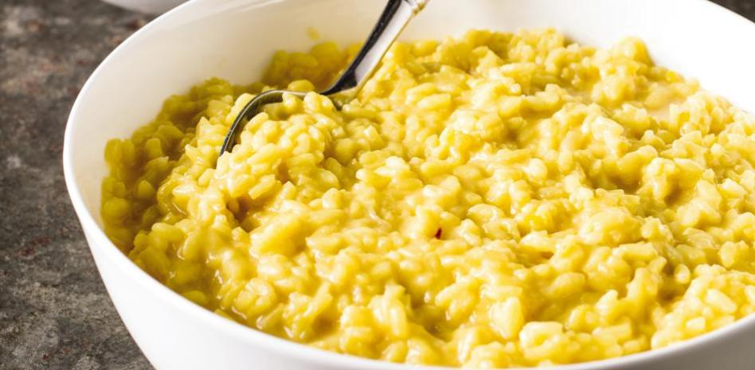

Risotto

Don't you like eating rice? You must definitely try this typical Italian dish! It's very easy to prepare and, believe me, you won't get tired to eat rice this way!
Ingredients
(Amount of servings: 4)
- 400 g of rice.
- 1l of vegetable stock.
- 1 clove of garlic
- 1 onion
- 1 small carrot
- 1 knob of butter
- 2 spoons of olive oil
- 90g of Parmesan cheese
- Salt to taste
Steps
- Heat the vegetable stock in a pan.
- Peel the onion and the carrot. Chop them. Mince the garlic.
- Add the spoons of olive oil and the knob of butter in another low-heated pan.
- Add the carrot. Fry gently for 3 minutes.
- Add the onion and the garlic and fry gently for another 5 minutes.
- Add the rice and turn up the heat. Stir it for 1 minute, until it is translucent.
- Add a ladleful of stock, and turn the heat down.
- Keep adding ladlefuls of stock and stir very gently until the rice is well-cooked (If you seem to be short of stock, don't worry! Add some boiling water.).
- Add the Parmesan cheese. Put a lid to the pan and let it sit for 2 minutes.
- Serve in bowls or plates, and enjoy!